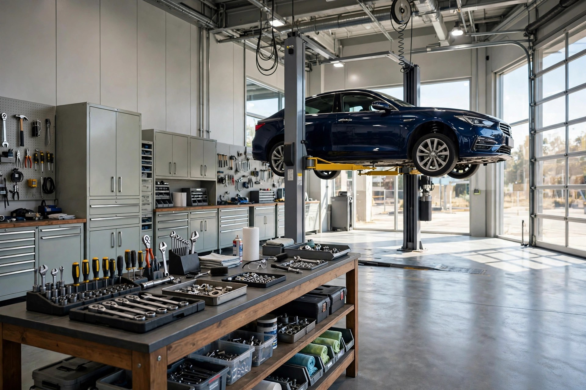
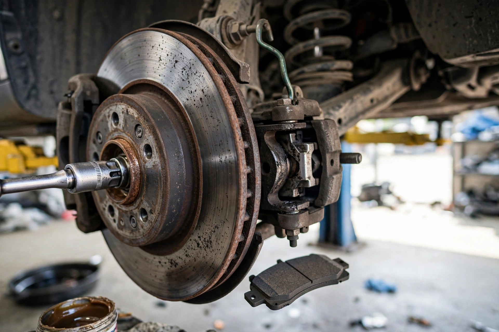
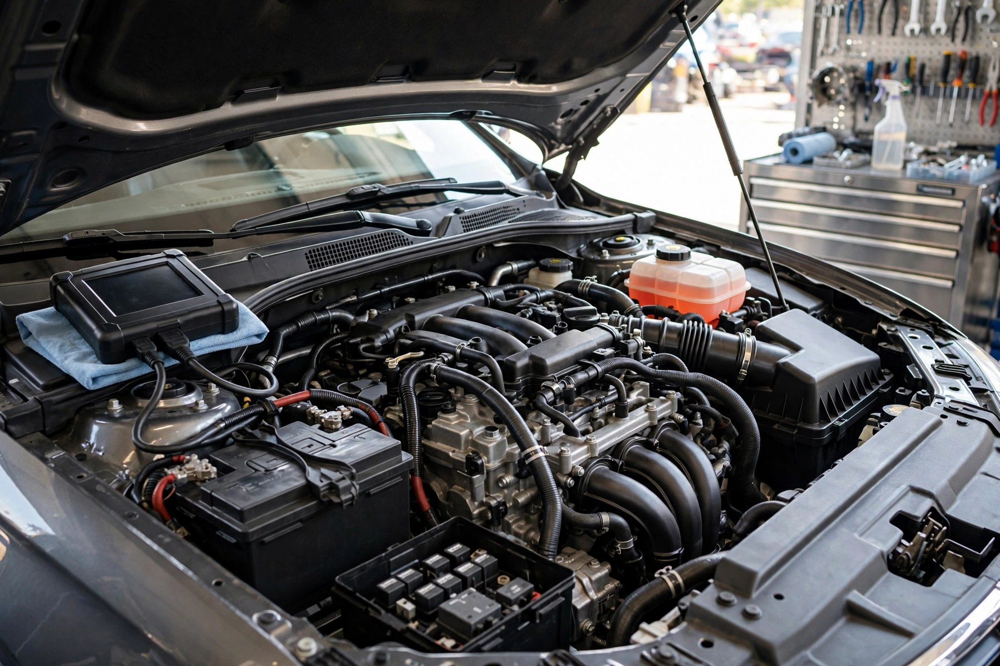
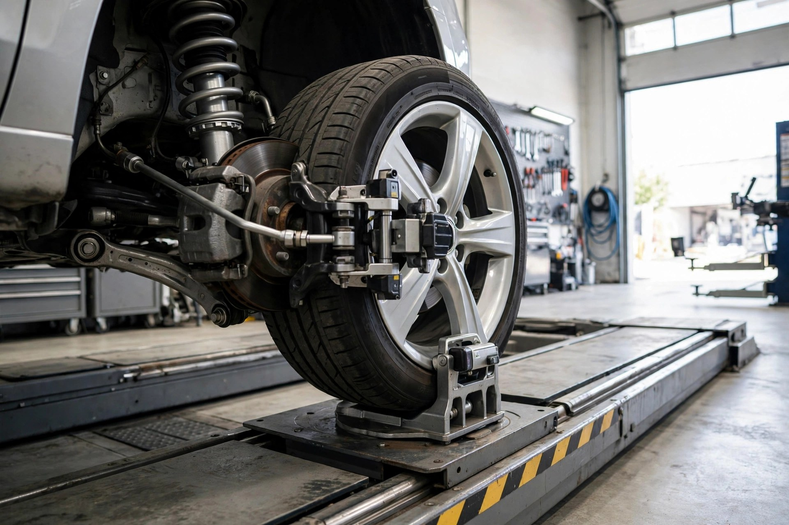

General servicing
Routine maintenance done properly — oil, filters, checks and adjustments to keep your car reliable.

East Perth, WA · Local mechanic
Amfor Motors — honest mechanical servicing on Kensington St. Rated 4.6 out of 5 from 12 reviews, with decades of local know-how.
What we do
Routine maintenance done properly — oil, filters, checks and adjustments to keep your car reliable.
Manufacturer-spec logbook services that keep your warranty intact and your service history complete.
Pads, rotors and a full brake-system inspection — stopping power you can count on.
We find the real cause with proper diagnostic gear instead of guessing — then show you the fix.
Shock absorbers, bushings and steering components — for handling that feels right and tyres that last.
Radiators, hoses, thermostats and coolant flushes — protection against Perth summers.

Why choose us
We've been looking after Perth cars for decades. No jargon, no surprises — just honest mechanical work explained before we touch a spanner.
The workshop


Reviews
Based on 12 verified reviews on Birdeye
Good to know
To make sure we can look after you, call ahead on (08) 9325 3362 — we open at 7:30am Monday to Friday, so most drivers are back on the road early.
Yes — cars, SUVs and light trucks of all makes. We're also well known locally for our experience with Subarus.
Monday to Thursday 7:30am – 4:00pm, Friday 7:30am – 2:00pm. Closed Saturday and Sunday.
141 Kensington Street, East Perth WA 6004 — a short drive from the Perth CBD.
Come and see us